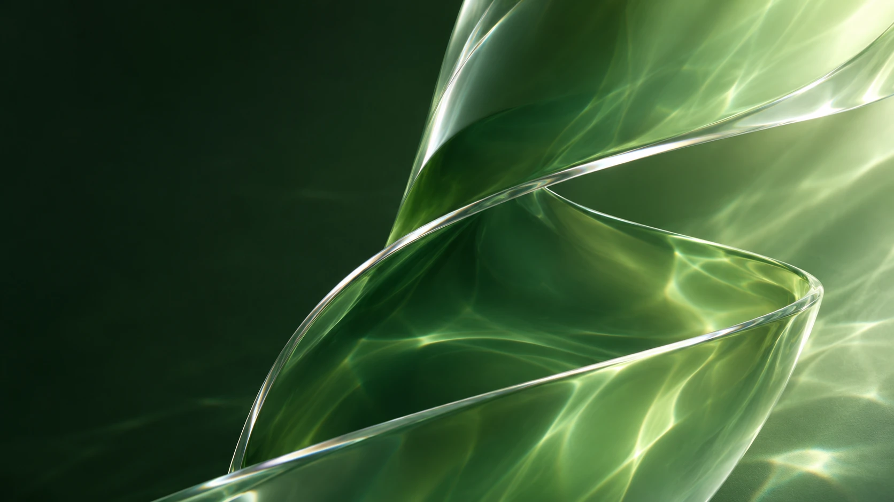
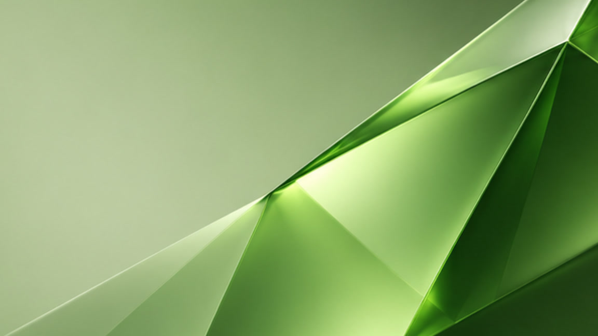
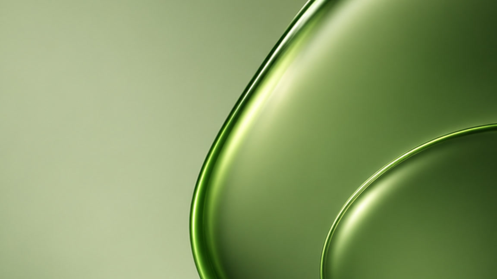

От одного мешка до железнодорожной цистерны
Поставляем сырьё из России и стран Азии. Помогаем согласовать марку, фасовку и объём под задачу производства.
О компании- Направлений в каталоге
- 8
- Реакторов на площадке
- 5
- Объём аппаратов
- 1–6,3 м³
Каталог продукции
Весь ассортимент





Выпускаем по вашей технологической карте
Оцениваем состав работ, подбираем аппарат под объём партии, согласуем требования к фасовке.
- Разбор требований и документации
- Производство партии
- Подготовка к отгрузке
Статьи и материалы
Все статьи
Как выбрать фасовку ацетата хрома
Канистра, бочка или еврокуб. От чего зависит выбор для конкретной партии.
Читать статью
ЭДТА-2Na и ЭДТА-4Na
Как сверить форму соли и требования к спецификации перед заказом.
Читать статью
Что указать в запросе на выпуск партии
Какие данные нужны технологу для оценки проекта.
Читать статьюЧастые вопросы
Поставка, документы и выпуск по вашей технологии.
Как заказать продукцию?
Откройте карточку товара и нажмите «Запросить предложение». Укажите требуемую марку, массу или объём, нужную тару и город доставки.
Можно ли заказать небольшую партию?
Везен отгружает от одной канистры или мешка. Для некоторых позиций действует собственный минимальный объём. Уточните его в карточке или у отдела продаж.
Как узнать, есть ли товар в наличии?
Отправьте запрос с названием и требуемым объёмом. Отдел продаж подтвердит наличие, срок комплектации и стоимость.
Можно ли получить паспорт качества или безопасности?
Да, запросите нужные документы на конкретную марку и партию. Доступные ТУ и паспорта производителя размещены в разделе «Документы и поставка» карточки.
Где посмотреть фасовку?
Откройте характеристики товара. Для жидкого сырья в каталоге встречаются канистры, бочки, еврокубы и цистерны. Совместимость тары с продуктом подтверждают при заказе.
Можно ли заказать доставку в другой регион?
Укажите адрес выгрузки и размер партии. Отдел продаж уточнит возможный способ доставки и срок с учётом вида груза и фасовки.
Где забрать продукцию самовывозом?
Склад находится в промышленной зоне Дзержинска. Точный адрес, время и порядок въезда согласуйте с менеджером при оформлении заказа.
Как подобрать марку или аналог?
Сообщите требуемый CAS, обозначение по ТУ или ГОСТ и параметры из спецификации. Возможность замены оценивают по назначению и требованиям к продукту.
Как заказать выпуск по своей технологии?
Укажите продукт, объём партии и требования к упаковке. Возможность выпуска оценивают по технологической карте и оборудованию.
Как связаться с отделом продаж?
Позвоните по номеру +7 952 448-48-97 или отправьте заявку через страницу контактов.
Обсудим вашу поставку?
Расскажите, какое сырьё нужно, где его будут использовать и какой объём планируете заказать.
Дзержинск, проспект Чкалова, 2